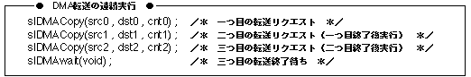

Return to previous page | Return to menu | Go to next page
void
Other functions
Wait until the end of DMA transfer
void slDMAWait(void)
None
Wait for the DMA transfer started by the function “slDMACopy” to finish.
None
The function “slDMACopy” always uses the same channel, and if a transfer is in progress, it waits for the end of the transfer and starts a new transfer, so the user can continue DMA transfer without being aware of the transfer completion. Can be executed.
The following is an example.

Reference: Chapter 9 Controller Input
slDMAWait